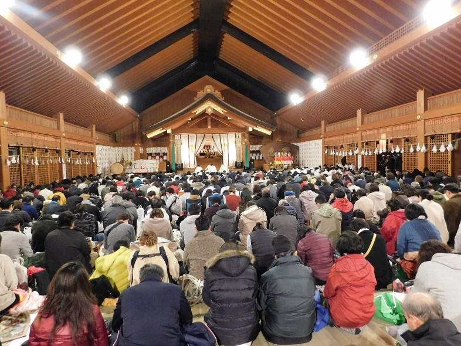
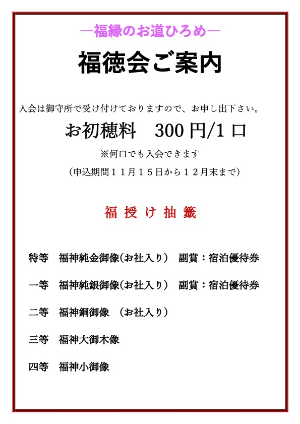

令和８年福徳会（ふくとくかい）のご案内
投稿日: 2025.11.08
 蜃ｺ髮ｲ螟ｧ遉ｾ譚ｱ莠ｬ蛻�逾�
譁ｰ 逹� 諠� 蝣ｱ
遖丞ｾｳ莨壹�ｮ縺疲｡亥��
譌ｧ證ｦ豁｣譛亥��譌ｦ�ｼ井ｻ､蜥�8蟷ｴ縺ｯ2譛�17譌･�ｼ峨�ｮ蟄舌�ｮ蛻ｻ縲∝�ｺ髮ｲ螟ｧ遉ｾ逾樊･ｽ谿ｿ縺ｫ譁ｼ縺�縺ｦ縲∵魚遖城幕驕九ｒ縺雁叙繧頑ｬ｡縺弱＞縺溘□縺冗･樔ｺ九′縲檎ｦ冗･樒･ｭ縲阪〒縺吶��
縺薙�ｮ遖冗･樒･ｭ縺ｫ蜿よ享縺悟掌繧上↑縺�譁ｹ縺ｮ縺溘ａ縺ｫ縲檎ｦ丞ｾｳ莨壹�阪′邨舌�ｰ繧後※縺翫ｊ縺ｾ縺吶�らｦ丞ｾｳ莨壻ｼ壼藤縺ｯ縲∝盾蛻苓��縺ｨ蜷後§縺丞ｮｶ蜀�螳牙�ｨ縲∫┌逞�諱ｯ轣ｽ繧堤･亥ｿｵ縺励�∽ｼ壼藤蜷咲ｰｿ縺悟･臥ｴ阪＆繧後∪縺吶��
蜃ｺ髮ｲ螟ｧ遉ｾ縲�逾樊･ｽ谿ｿ
縲�逕ｳ霎ｼ譖ｸ縺ｨ蜈ｱ縺ｫ荳�蜿｣�ｼ難ｼ撰ｼ仙��縺ｮ蛻晉ｩよ侭繧偵♀邏阪ａ縺�縺溘□縺阪∪縺吶��
縲�荳�蜿｣豈弱↓窶應ｼ壼藤遶�窶昴→ 窶懃ｦ丞ｾｳ莨壼ｾ｡螳遺�昴ｒ謗井ｸ弱＞縺溘＠縺ｾ縺吶��
�ｼ医♀逕ｳ縺苓ｾｼ縺ｿ譛滄俣縲�11譛�15譌･繧医ｊ12譛域忰縺ｾ縺ｧ�ｼ�
蠖馴∈逋ｺ陦ｨ縺ｯ�ｼ捺怦縺ｮ荳ｭ譌ｬ鬆�縺ｮ莠亥ｮ壹〒縺吶�ょｽ鍋､ｾ縺ｮ繝帙�ｼ繝�繝壹�ｼ繧ｸ蜿翫�ｳ謗ｲ遉ｺ譚ｿ縺ｫ縺ｦ縺顔衍繧峨○縺�縺溘＠縺ｾ縺吶��
縺ｪ縺翫�∝ｽ馴∈縺ｮ縺秘�｣邨｡縺ｨ逋ｺ騾√�ｯ縺�縺溘＠縺ｦ縺翫ｊ縺ｾ縺帙ｓ縲�
謌ｻ繧�
お問い合わせ
出雲大社東京分祠
〒106-0032 東京都港区六本木7-18-5
TEL: 03-3401-9301
受付時間: 午前9時～午後5時